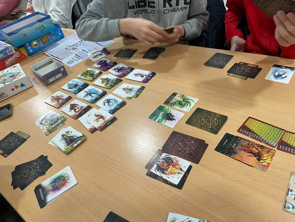
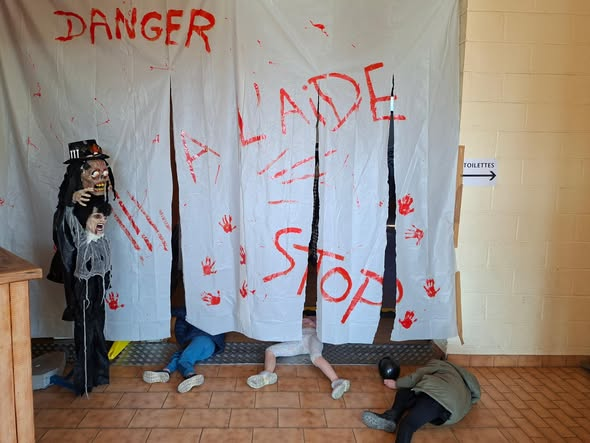
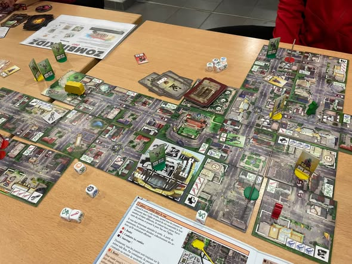
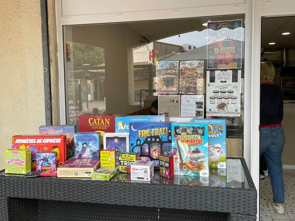
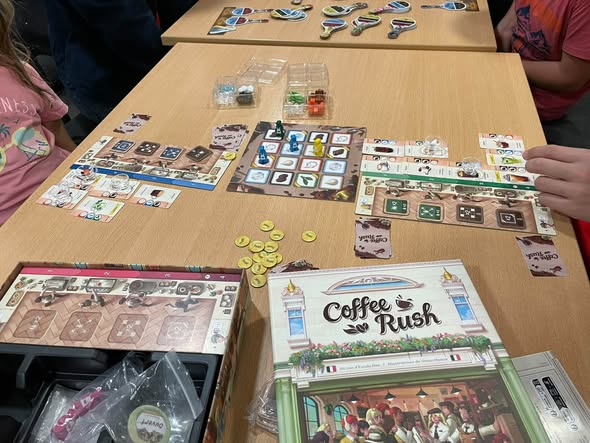
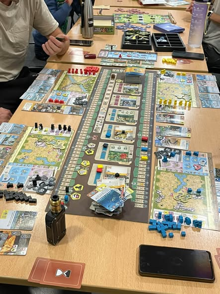

10 novembre 2026
Hop hop hop, reprise du rythme normal des soirées du vendredi soir !… En
Jeux de société
Hop hop hop, reprise du rythme normal des soirées du vendredi soir !… En
Lire l'articleLa vie du club
Les dernières publications du Cercle des Joueurs Paresseux.

10 novembre 2026
Jeux de société
Hop hop hop, reprise du rythme normal des soirées du vendredi soir !… En
Lire l'article
8 novembre 2026
Jeux de société
🎃 Une semaine après Halloween, replongez dans l’ambiance de l’Expérience Z-31 ! 👻 Voici quelques photos pour revivre les frissons ou découvrir cette belle après-midi ! Un immense merci à tous pour votre présence, votre enthousiasme et votre participation ! ❤️ Grâce à vous, cette édition a été une belle réussite ! Un événement organisé en collaboration avec Les Lutins Bonheur, Le Cercle des Joueurs Paresseux et l’Espace Jeunesse Vailhauquès !
Lire l'article2 novembre 2026
Jeux de société
Ça y est ! On est en novembre, Halloween, c’est fini pour cette année ! VAILHAUQUES va pouvoir retrouver un rythme normal ! Fini les monstres qui se baladent dans les rues, qui lancent des sorts et rackettent des bonbons, fini les graffeurs qui saccagent l’espace public Nous espérons que les stands proposés, et l’expérience Z-31 auront été à la hauteur de vos attentes, en tous cas on y aura mis tout notre cœur et on aura fait de notre mieux ! Quelques infos sur cette après-midi du 31/10, c’est…
Lire l'article
28 octobre 2026
Jeux de société
Pas de publi pour vendredi dernier ?! Pas de soirée ? Si si au contraire ! Mais nous sommes en pleine préparation pour Halloween, et ça prend du temps !! Vendredi nous avons fait qlq révisions de règles pour le jour J, mais ça a aussi fait de la course de voiture avec Heat, et de la magie noire avec Invocations - Cimagames, qui fait encore un nouvel adepte ! Pas de soirée jeux ce vendredi 30, il y a toute la déco et mise en place de l’après midi…
Lire l'article
18 octobre 2026
Jeux de société
Pour finir le we, ce matin c’était brunch Chez Floflow ! L’occasion de faire des petits jeux sympa et rapides, autour d’une bonne assiette ! Attention, uniquement sur réservation, une fois par mois ! #vailhauques #lecercledesjoueursparesseux #jeuxdesociete #chezflowflow
Lire l'article
18 octobre 2026
Jeux de société
Vendredi, c’était le dernier jour avant les vacances ! Comme prévu, soirée jeux axée pour sur des jeux courte durée et fun ! Coffee rush où on lutte contre les commandes incessantes des clients, potion explosion où on prépare ses potions pour Halloween ou encore happy city, où on construit la ville parfaites étaient au rdv ! Ça n’a pas empêché un Clank catacombes, où le dragon ne se sera manifesté que tardivement, malgré une partie d’invocation particulièrement animée. Ce dernier est un petit jeu réalisé par deux français, via…
Lire l'article16 octobre 2026
Vie du club
🧪🎃 L’EXPÉRIENCE Z-31 : 75 % DES PLACES DÉJÀ RÉSERVÉES ! 🧟 👨👩👧👦 De la petite section aux grands-parents, tout le monde peut participer ! En famille, entre amis ou entre ados, venez vivre cette aventure imaginée de A à Z spécialement pour vous ! 🎭 Déguisement obligatoire et concours de costumes pour les plus créatifs ! 🏆 ⚠️ Attention, les places sont limitées et 75 % sont déjà réservées ! Ne tardez pas à réserver votre mission ! 📅 Samedi 31 octobre 2026 dès 15h 📍 Salle polyvalente Paul…
Lire l'article
11 octobre 2026
Jeux de figurines · Jeux de société
Et encore un vendredi soir bien rempli ! Du arch nova maîtrisé d’une main de maître par deux expertes! Désolé pour les deux « nouveaux » joueurs qui se sont fait satellisé ! Un jeu plus familial mais très sympa : carnuta : achetez et jouez vos cartes en payant avec vos runes que vous retournez selon les actions ! Vraiment simple et prenant ! Du dice roll ou encore toys battle pour des parties duo. Stratégie et aléatoire, il faut s’adapter ! Et enfin de la figurine, avec une…
Lire l'article24 publication(s) conservée(s).